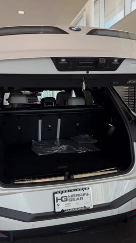
BMW of Jackson · 3:00 PM CT · @bmwofjackson8/workspace/video/bmw-x5-2027-reel/renders/final/bmw-x5-2027-15-seconds-9x16-music.mp4The all-new 2027 BMW X5. Walk around it once. 👀 #BMW #X5 #BMWofJackson #JacksonMS
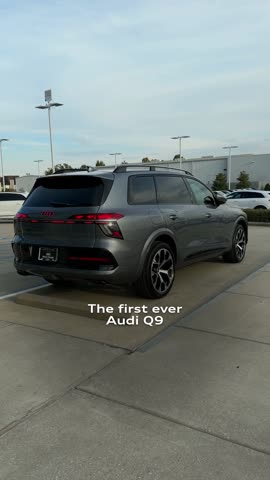
Audi Baton Rouge · 4:00 PM CT · @audibatonrougehttps://postengine.thecoopbrla.com/media/generated/c880b8c86b5f-505d0148-abr-q9-reel-9x16-v2.mp4The first-ever Audi Q9. Flagship presence, now at Audi Baton Rouge. #Audi #AudiQ9 #AudiBatonRouge #quattro
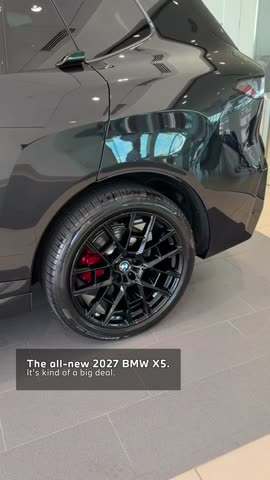
Brian Harris BMW · 5:00 PM CT · @brianharrisbmwhttps://postengine.thecoopbrla.com/media/generated/2f86db6026d5-bhbmw-x5-vb.mp4The all-new 2027 BMW X5. It's kind of a big deal. #BMW #X5 #BrianHarrisBMW #BatonRouge
Nov 19 · 3:00 PMX5 15 seconds (Nov 4 shoot, Jackson showroom)
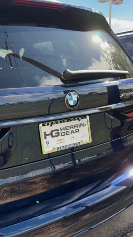
Nov 20 · 11:00 AMX7 'Which color would you pick?' v2
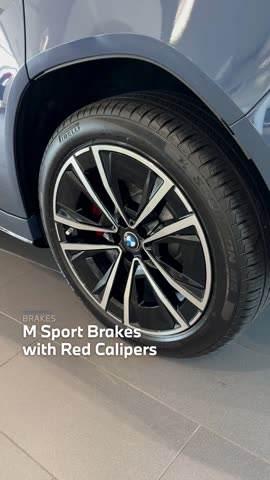
Nov 21 · 11:00 AMiX3 electric reveal
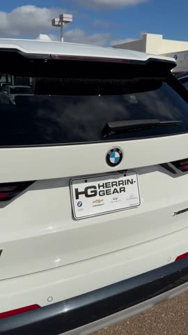
Nov 22 · 11:00 AMX1 'Which color would you pick?' v2
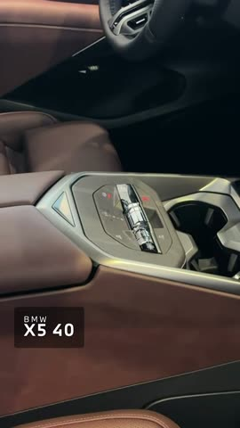
Nov 23 · 11:00 AMX5 40 va (PE 491, IG 874 / FB 27,714 views)
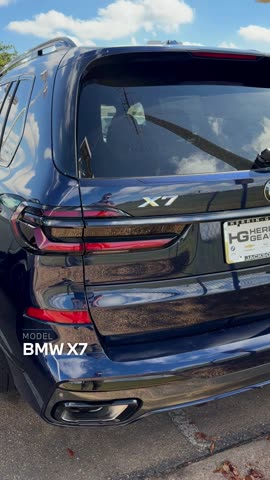
Nov 24 · 11:00 AMX7 on the lot
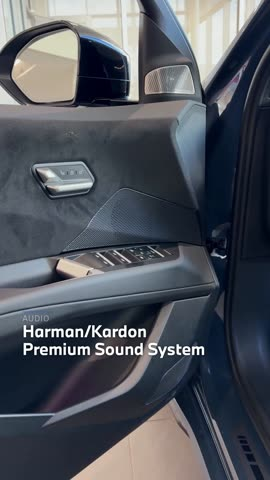
Nov 25 · 11:00 AMInside the iX3
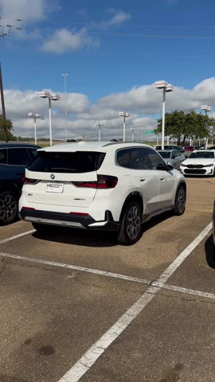
Nov 26 · 11:00 AMX1 on the lot
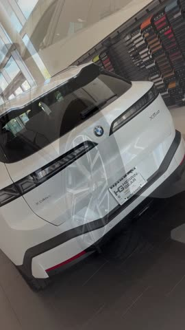
Nov 27 · 11:00 AMX5 new face
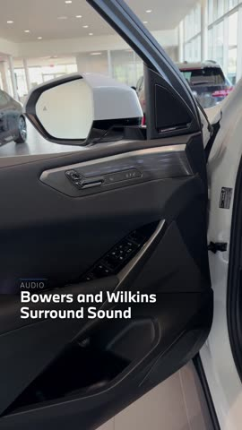
Nov 28 · 11:00 AMX5 open it up (or Ansel cut, pending)
Nov 19 · 4:00 PMQ9 first ever (PE 513, IG 504 views, top)
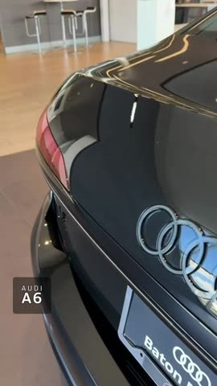
Nov 20 · 12:00 PMA6 va (PE 445)
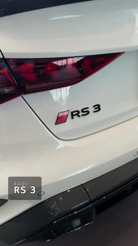
Nov 21 · 12:00 PMRS 3 va (PE 448)
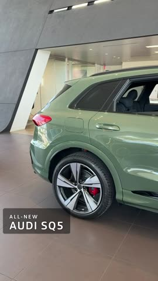
Nov 22 · 12:00 PMSQ5 green full (PE 367)
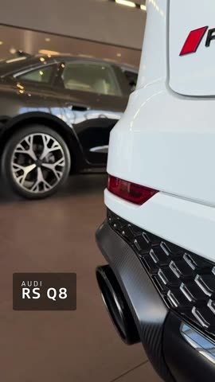
Nov 23 · 12:00 PMRS Q8 va (PE 446)
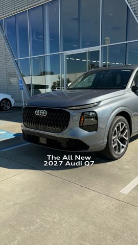
Nov 24 · 12:00 PMAll-new 2027 Q7 (PE 510)
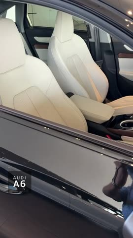
Nov 25 · 12:00 PMA6 vb (PE 449)
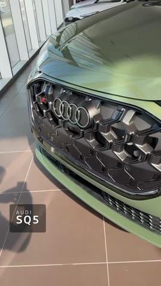
Nov 26 · 12:00 PMSQ5 va (PE 447)
Nov 27 · 12:00 PMRS 3 vb (PE 452; also scheduled to IG/FB Nov 20)
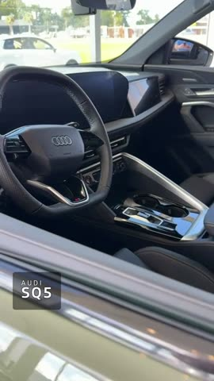
Nov 28 · 12:00 PMSQ5 vb (PE 451)
Nov 19 · 5:00 PMX5 vb (PE 457, IG 11,676 views, top)
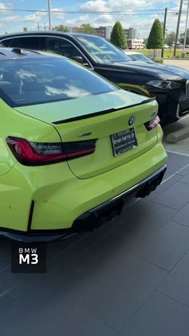
Nov 20 · 1:00 PMM3 va (PE 456)
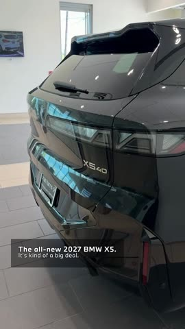
Nov 21 · 1:00 PMX5 va (PE 455, IG 4,375 views)
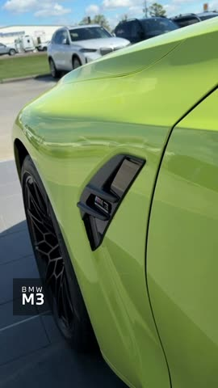
Nov 22 · 1:00 PMM3 vb (PE 458)
Ansel cut / archive pull (pending)
Nov 23 · 1:00 PMAnsel archived BHBMW reel (pending)
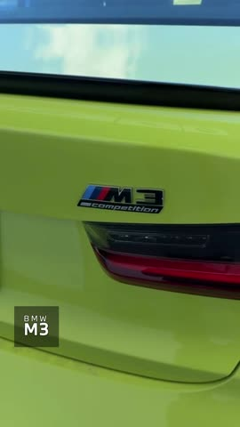
Nov 24 · 1:00 PMM3 vc (PE 459)
Ansel cut / archive pull (pending)
Nov 25 · 1:00 PMAnsel archived BHBMW reel (pending)
Ansel cut / archive pull (pending)
Nov 26 · 1:00 PMAnsel archived BHBMW reel (pending)
Ansel cut / archive pull (pending)
Nov 27 · 1:00 PMAnsel archived BHBMW reel (pending)
Ansel cut / archive pull (pending)
Nov 28 · 1:00 PMAnsel archived BHBMW reel (pending)
Evening slot: BMWJ 5 PM, ABR 6 PM, BHBMW 7 PM CT. Real offers only; ABR ends Jan 4, 2027; BMW programs end Nov 30 (tire rebate Dec 31).
ABR A: All-new 2027 Q7 + Q9Hook: Every family has its traditions. Ours is quattro. (on-screen: 'The all-new 2027 Q7 / The first ever Q9')
On-screen: Existing 9:16 art: 4.99% APR only as small secondary line, 'Offers end January 4, 2027' on art
The all-new 2027 Audi Q7 and Q9 are here. 4.99% APR for 60 months* and a $1,500 loyalty bonus for current Audi owners. Audi Baton Rouge. #Audi #AudiQ7 #AudiQ9 #AudiBatonRouge
*4.99% APR for 60 months on the 2027 Audi Q7, SQ7, Q9 and SQ9 for highly qualified customers, subject to credit approval by Wells Fargo. Current Audi owners may receive a $1,500 customer bonus. Offers end 1/4/27. See dealer for details.
ABR B: 2026 Q5 + outgoing 2026 Q7Hook: Make the season quattro. (on-screen: Up to $6,500 off / Over $11,000 off)
On-screen: Existing 9:16 art: Q5 chips 1.99% APR / $4,000 / $2,500 then 'Up to $6,500 off'; 2026 Q7 'Over $11,000 off'
Make the season quattro. 2026 Audi Q5: up to $6,500 off + 1.99% APR for 60 months*. 2026 Audi Q7: over $11,000 off†. Current Audi owners add a loyalty bonus ($1,000 on Q5, $1,500 on Q7). Audi Baton Rouge. #AudiQ5 #AudiQ7 #AudiBatonRouge #quattro
*Up to $6,500 off = $4,000 Audi Baton Rouge discount + $2,500 Audi customer bonus on select new 2026 Q5 quattro Premium Plus models; not all customers will qualify. 1.99% APR for 60 months, highly qualified customers, subject to credit approval by Wells Fargo through participating dealers ($17.52 per $1,000 financed). Current Audi owners may add a $1,000 (Q5) or $1,500 (Q7) loyalty bonus. †Select new 2026 Q7 inventory: dealer offer + Audi customer bonus totaling over $11,000 before tax, title, license, registration, dealer fees, optional equipment, insurance and other required fees. Some exclusions apply. Offers end 1/4/27.
Road Home Sales Event
Ansel 9:16 Road Home video from Drive folder 'Road Home Sales Event' (X1/X3 YEE, Loyalty, Nov APR; ends Nov 30). Must be fully watched and legal-checked first (APR/loyalty figures are burned in).
The BMW Road Home Sales Event is on through November 30. Exceptional offers on select models. See them at [store]. #BMW #BMWRoadHome #[StoreTag]
Certified Pre-Owned APR
Needs 9:16 (Eleanor brief) or a CPO vehicle clip with end card. Source: Tara Nov CPO offers.
Certified and rate-ready. 4.99% APR up to 36 months* on all 2021-2024 BMW Certified models (excl. 2022-2024 EVs) through 11/30. [store]. #BMWCertified #BMW #[StoreTag]
*Through 11/30/2026 for well-qualified customers: 36 monthly payments of $29.97 per $1,000 financed, no down payment for well-qualified customers. Not all customers will qualify for the lowest rate or down payment waiver. Other rates and terms available. Subject to vehicle availability. BMW Financial Services NA, LLC.
BMW Drive to End Hunger
No video exists. Eleanor 9:16 from the Nov FMA creative (green SAV, Feeding America).
Now through November 30, your new BMW purchase helps provide approximately 200 meals through Feeding America®. [store]. #BMWDriveToEndHunger #BMW #[StoreTag]
[Short legal line needed from the BMW Hunger program terms; only the 2024 dealer guide is on file.]
Tire rebate (runs to Dec 31)
Needs 9:16 (Eleanor brief) from 'STAY ON TRACK' social static 1x1.
Stay on track. Up to a $120 Prepaid Mastercard® by mail with four eligible tires at [store].* #BMW #BMWTireCenter #[StoreTag]
*$120 on four eligible Bridgestone, Continental, Michelin or Pirelli tires ($60 manufacturer + $60 BMW Tire Center); $80 on four eligible Goodyear. Purchases 10/1-12/31/2026. Claim at tireoffers-center.com, code 2026-106B [verify code against hi-res creative]. Submit by 1/31/27.
| ABR | BMWJ | BHBMW |
|---|
| Nov 21 Sat ABR-A | Nov 21 Sat Road Home video | Nov 22 Sun Road Home video |
| Nov 24 Tue ABR-B | Nov 24 Tue CPO APR | Nov 25 Wed CPO APR |
| Nov 28 Sat ABR-A (c-variant re-cut) | Nov 27 Fri Drive to End Hunger | Nov 28 Sat Drive to End Hunger |
| Dec 1 Tue ABR-B (c-variant re-cut) | Nov 30 Mon Road Home, last day | Nov 30 Mon Road Home, last day |
| Dec 5 Sat ABR-A | Dec 4 Fri Tire rebate | Dec 5 Sat Tire rebate |
| Dec 8 Tue ABR-B | Dec 8 Tue December program (PENDING, new programs ~Dec 1) | Dec 9 Wed December program (PENDING) |
| Dec 12 Sat ABR-A (re-cut) | Dec 11 Fri Tire rebate, new cut | Dec 12 Sat Tire rebate, new cut |
| Dec 15 Tue ABR-B (re-cut) | Dec 15 Tue December program (PENDING) | Dec 16 Wed December program (PENDING) |